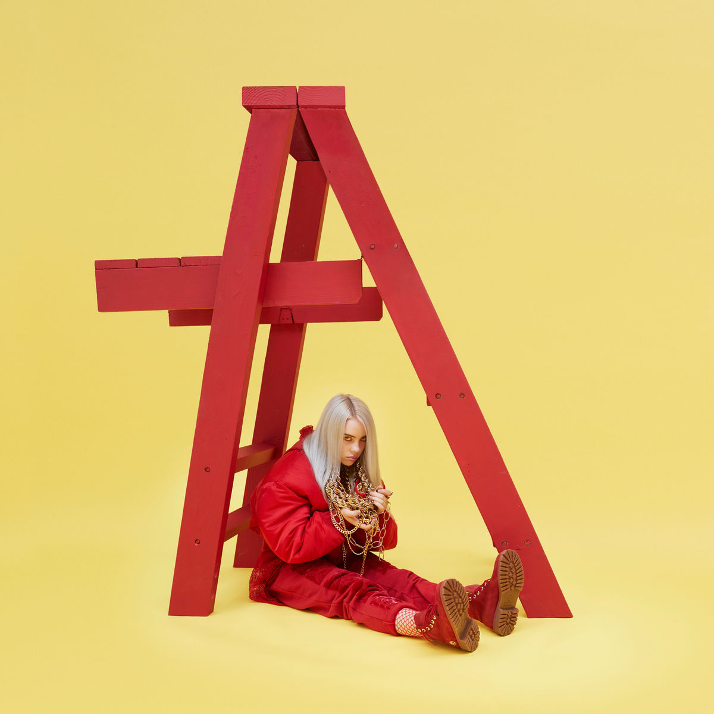
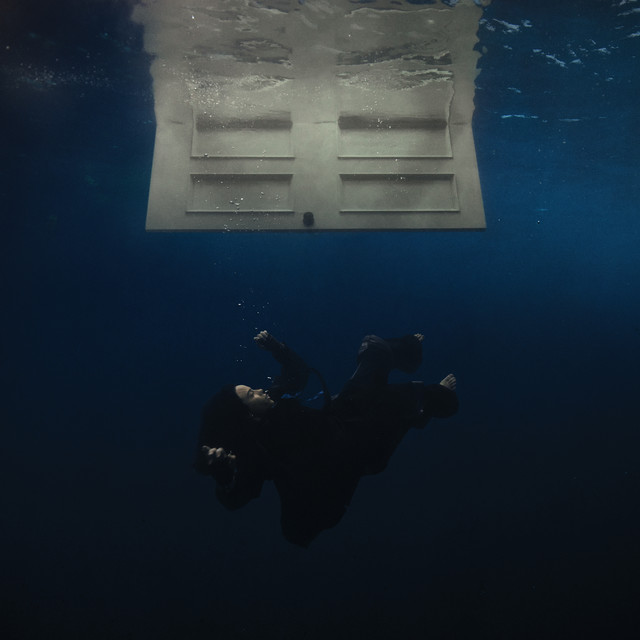
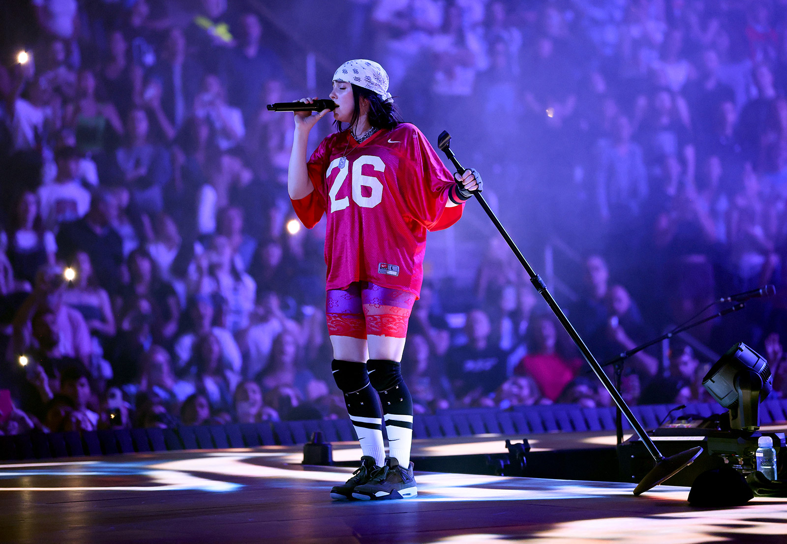

2017
dont smile at me
Color, rebeldía y una presencia imposible de ignorar. Una era joven, directa y ya totalmente reconocible.
fanmade archive
for the ones who feel everything
Oscura, elegante, intensa, frágil, poderosa. Esta página reúne la vibra de Billie Eilish en una mezcla de visuales, álbumes icónicos y esa energía que hace que cada era se sienta distinta.
eras & albums
Cada portada abre una atmósfera diferente: del amarillo rebelde al azul profundo, pasando por el beige melancólico y la oscuridad más cinematográfica.

Color, rebeldía y una presencia imposible de ignorar. Una era joven, directa y ya totalmente reconocible.

La estética nocturna, inquietante y teatral. Una era que convirtió lo extraño en algo inolvidable.
Más cálida, más clásica y más emocional. Beige, luz suave y una belleza serena con fondo melancólico.

Profundidad, agua, silencio y vértigo. Una estética inmersiva que se siente casi como un sueño bajo el océano.

the vibe
Billie logra algo muy raro: cada era tiene identidad propia, pero sigue sintiéndose como ella. Puede pasar de lo íntimo a lo explosivo, de lo delicado a lo inquietante, sin perder autenticidad.
Por eso conecta tanto con fans: no solo por las canciones, sino por los visuales, la moda, los contrastes, la escenografía y esa mezcla entre vulnerabilidad y fuerza.
“Some artists are listened to. Billie is felt.”
visual archive
Azul profundo, beige nostálgico, negro cinematográfico y detalles intensos que hacen que cada visual se quede en la memoria.
fan favorites
Una mezcla de clásicos, himnos emocionales y canciones que se sienten distintas dependiendo de la era, el mood y el momento.